# 聚类分析
聚类是将数据划分为不同的类或者簇的过程。
同一个簇中的对象相似，而不同的簇间的对象相异。
# 聚类的分类
# 相似性度量
距离系数
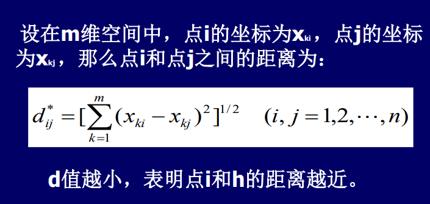相关系数
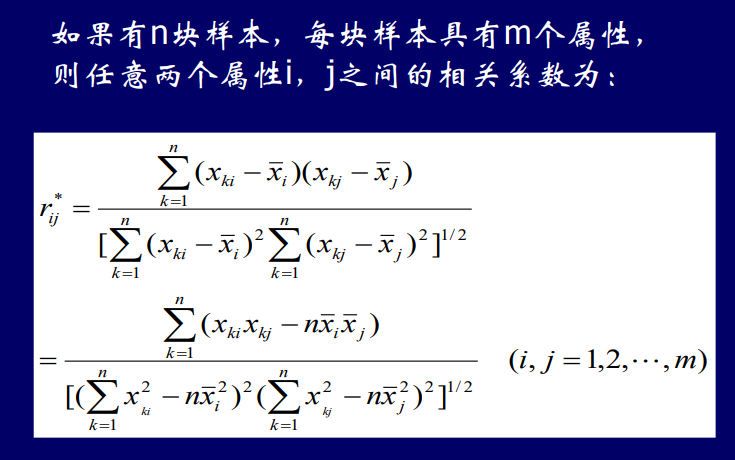分子是协方差，分母是两个标准差
分母的作用：归一化到-1到1范围
余弦相似度
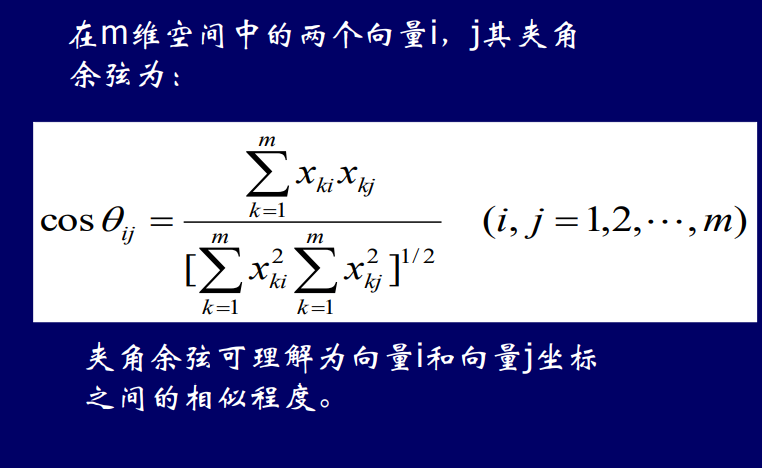以角度衡量对象相似性。
规律：值越大，角度越小，越相似。
绝对值距离
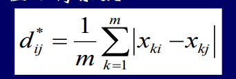切比雪夫距离

马氏距离

# 层次聚类
分析流程
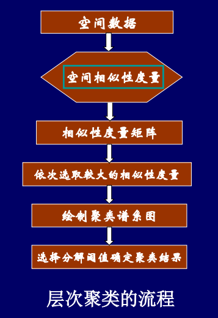每一轮聚类后，需要重新计算聚类中心。
特点
- 呈树型的层次结构
- 需要计算相似性度量矩阵
- 聚类过程是从底部向上
- 需要人为确定划分阈值
- 计算矩阵复杂，只适合于小数据量聚类
Q型聚类：又叫样品分类，就是对观测对象进行聚类，是根据被观测的对象各种特征进行分类。【对样本聚类】
R型聚类：对变量进行分类处理。【对属性聚类 】
# 分割聚类
给定一个大小为N的数据集，将其分为m类，使类内具有较高的相似度，而类间的相似度较低。
# K均值
分析流程
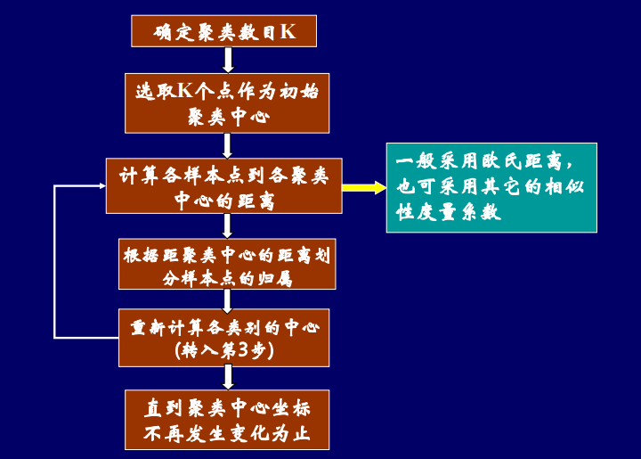优缺点：
- 直观，易实现且占用内存少
- 类别数目以及初始类中心的选择具有较强的主观性，需要借助先验知识。
- 适合凸集数据，无法处理形状复杂的数据
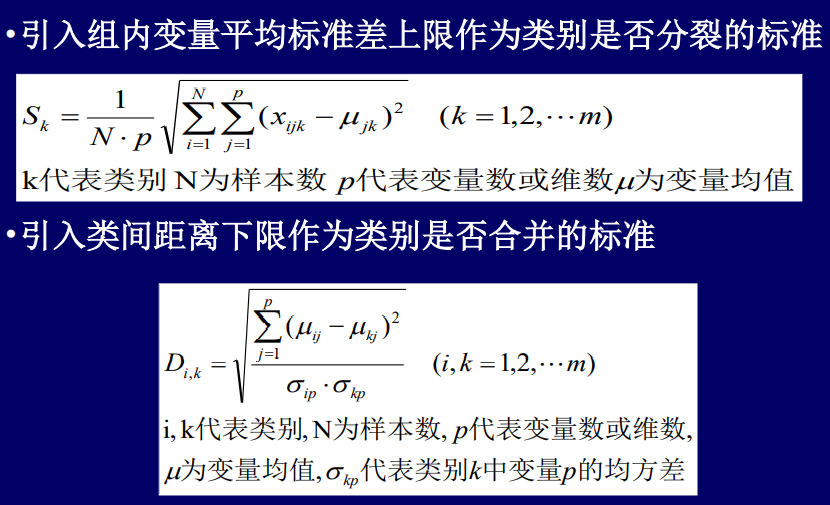
# 模糊K均值
引入隶属度，用于表示一个样本到不同类别的模糊隶属度。
理解样本到不同类别的概率
FCM算法是C-Means算法的改进，两者之间的差别在于，C-Means算法对于数据的划分是硬性的，而FCM则是一种柔性的模糊划分。
分析流程
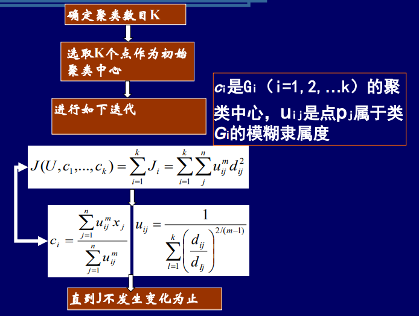优先模糊隶属度
再计算聚类中心，其计算与模糊隶属度相关。而在K均值时，聚类中心仅考虑平均值。
在地学分析内应用：
- 污染源分析
- 土壤类型判断
# 密度聚类
# 四个概念
# 领域和核心点
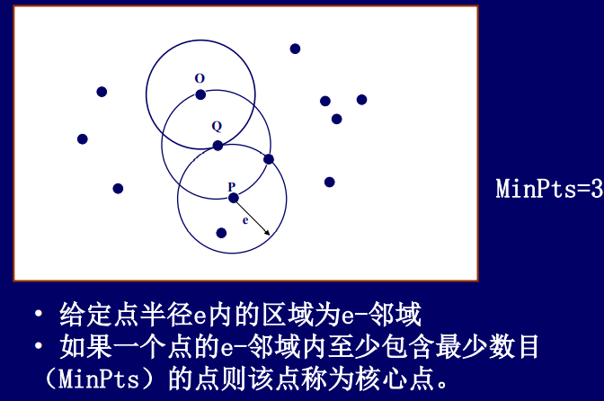# 直接密度可达
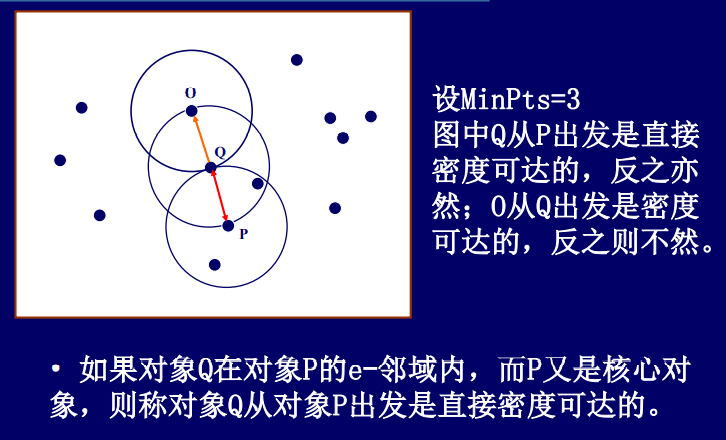条件:
- 起始点是核心点
- 终止点在核心点的e领域内容
# 密度相连
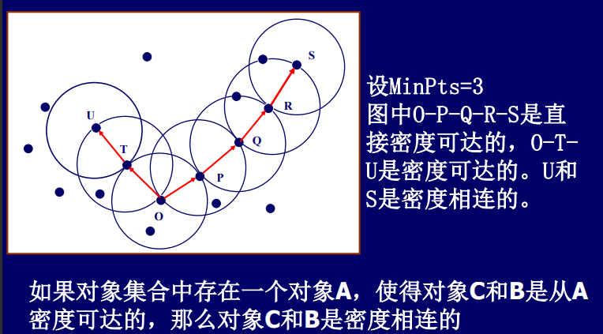密度相连不一定双方是核心点
# 算法描述
基于密度的聚类方法是寻找这样的簇:
- 该簇是基于密度可达性性的最大密度相连对象的集合
- 不被任何簇所包含的对象被认为是噪声
# 算法流程

问题：
e领域和核心点参数的确定
观察分析原始数据来进一步得到参数的确定范围
算法思想：数学归纳法，先确定第一个点，递推到直到最终的结果。
# K函数和L函数
# 异质性判别
# 应用
强震余震和前震的识别
A new approach on nearest-neighbour method to discover cluster features in overlaid spatial point processes. Internaltional Journal of Geographical Information Sciences.
A new method for discovering clusters of different densities in spatial data.Data Mining and Knowledge Discovery
Windowed nearest neighbour method for mining spatio-temporal clusters in presence of noise.IJGIS
密度极值点的可视化
极值点的表示
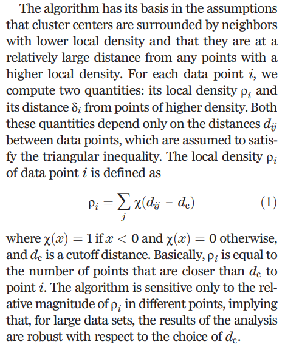第一个指标。
该点指定某个半径内的的点数。
聚类结果的确定
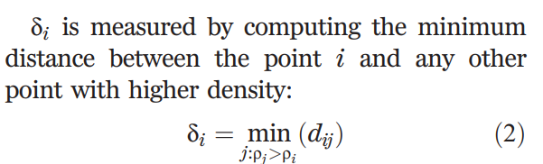i的第二个指 标。
找i点附近比其密度更高的点，寻找密度最小的点，计算其距离。
算法步骤:
- 参数：dc
- 中心：通过可视化找出每个聚类的密度中心
- 聚类：每个点属于最近邻的距离
点集随机性判别
泊松过程
事件K近邻距离
异质性判别指数
随机指标的判别
K函数和L函数
Seed Dispersal and Spatial Pattern in Tropical Trees